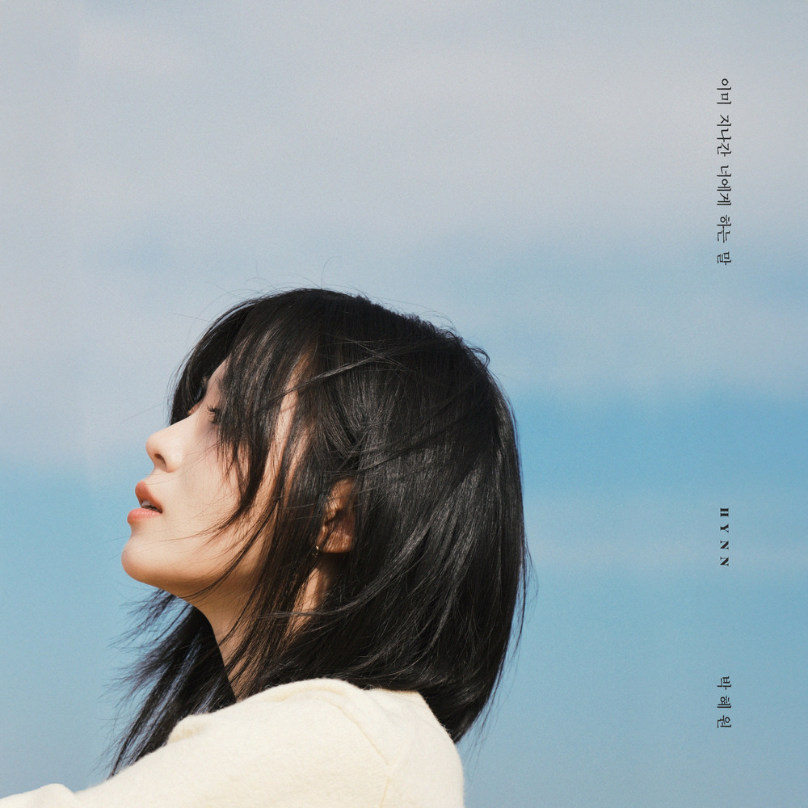
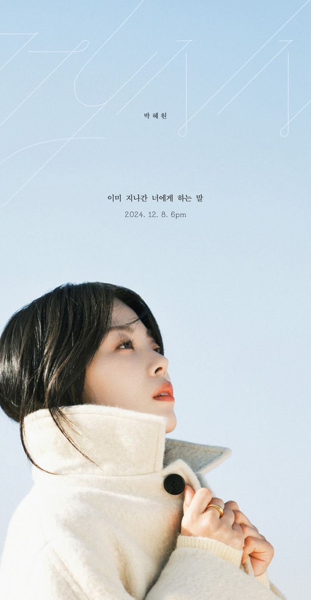

안녕하세요 라보엠입니다.
겨울의 차가운 공기와 함께 찾아온 HYNN(박혜원)의 새로운 싱글 '이미 지나간 너에게 하는 말'이 청취자들의 마음을 따뜻하게 감싸고 있습니다. 2024년 12월 8일에 발매된 이 곡은 지나간 사랑에 대한 그리움과 아련한 추억을 담아낸 감성 발라드로, 많은 이들의 공감을 얻고 있습니다.

뮤직비디오
이번에 공개된 뮤직비디오는 노래의 감성을 시각적으로 잘 표현하고 있습니다. 끝없이 펼쳐진 파란 하늘 아래에서 HYNN이 바람에 머리카락을 흩날리며 먼 곳을 응시하는 모습이 인상적입니다. 이는 지나간 추억들을 되새기며 마음속 깊은 곳에 담아둔 말을 건네려는 듯한 아련하고도 담담한 분위기를 자아냅니다.
이미 지나간 너에게 하는 말은 한때 모든 것이었던 사랑이 떠난 후에도 마음 속에 남아있는 따뜻한 기억을 노래합니다. "만약 네가 있었다면"이라는 가정에서 시작해 함께했던 순간의 아름다움과 이별 후의 아픔을 섬세하게 그려냅니다. HYNN의 깊이 있는 보컬은 지나간 사랑의 흔적을 더욱 선명하게 드러내며, 듣는 이들의 가슴 속에 잠들어 있던 그리움을 깨워냅니다. 이 곡은 차가운 계절 속에서 따뜻한 위로가 되어줄 노래이자, 그리운 이에게 전하는 진솔한 속삭임과도 같습니다.
이 곡의 완성도를 높인 것은 실력파 뮤지션들의 참여입니다. 데이식스의 영케이가 작사를, 포스트맨의 신지후가 작곡을 맡아 서정적인 멜로디와 감각적인 가사로 곡의 깊이를 더했습니다. 이들의 협업으로 탄생한 이 노래는 누구나 마음 한켠에 간직한 그리운 사랑을 아름답게 표현해냈습니다.
HYNN(박혜원)의 음악 여정과 한강 작가의 흰
HYNN은 이번 곡 발매 전인 2024년 10월에 '오늘 노을이 예뻐서'를 발표하며 리스너들의 감성을 자극한 바 있습니다. 노벨문학상 수상 작가 한강의 소설에서 영감을 받은 예명으로도 주목받은 그녀는 라디오와 예능 프로그램 출연 등 다양한 활동을 통해 대중과의 접점을 넓혀왔습니다.
HYNN은 데뷔 전 활동명을 고민하던 중 소속사 대표의 추천으로 한강의 소설 '흰'을 읽게 되었습니다. 이 소설에서 "내가 더럽혀지더라도 흰 것만을 건넬게"라는 문장에 큰 감명을 받았습니다. 이 문장을 통해 HYNN은 순수한 음악을, 그런 메시지만을 건네는 가수가 돼야겠다고 결심하게 되었고, 이에 따라 '흰'이라는 이름을 따와 예명으로 삼게 되었습니다. 한강 작가 역시 HYNN의 존재를 알고 있는 것으로 알려졌습니다. 2023년 한강 작가의 북 콘서트에서 '가수 HYNN(박혜원)'을 아느냐는 질문에 "알고 있다"고 답했다는 이야기가 있습니다. 이 소식을 들은 HYNN은 크게 기뻐하며 놀라워했고, 향후 한강 작가와 함께 라이브를 선보이고 싶다는 희망을 표현했습니다.
2024년 10월 한강 작가가 노벨문학상을 수상 소식이 전해지며, HYNN의 예명은 더욱 주목받게 되었습니다. HYNN은 이에 대해 자랑스러운 이름이 됐다고 소감을 밝혔으며, 한강 작가의 수상을 축하하는 글을 SNS에 올리기도 했습니다.
HYNN과 한강 소설의 관계는 문학과 음악이 서로 영감을 주고받는 아름다운 사례를 보여줍니다. 이는 한국 문화의 다양성과 깊이를 보여주는 동시에, 젊은 세대가 문학을 통해 자아를 찾고 공감대를 형성해나가는 모습을 잘 보여주고 있습니다.
음악적 특징
이미 지나간 너에게 하는 말은 HYNN의 짙은 감성과 울림 있는 목소리가 돋보이는 곡입니다. 서정적인 멜로디와 공감을 불러일으키는 가사는 마음 한구석에 간직된 그리운 사랑을 떠올리게 하며, 깊은 울림을 선사합니다. 이 곡은 겨울의 쓸쓸함과 따스함을 동시에 담아내어, 계절의 감성을 잘 표현하고 있습니다. HYNN의 독보적인 보컬이 더해져 추운 겨울을 따스하게 감싸줄 음악으로 자리잡을 것으로 기대됩니다.
맺음말
이 노래는 HYNN의 음악적 성장을 보여주는 작품입니다. 그녀의 감성적인 보컬과 영케이, 신지후의 뛰어난 작사/작곡 실력이 만나 완성도 높은 발라드를 탄생시켰습니다. 이 곡은 겨울밤, 그리운 이를 떠올리며 듣기 좋은 노래로, 많은 이들의 플레이리스트에 오르게 될 것 같습니다. 겨울의 감성을 담은 이 곡과 함께 여러분의 마음속 그리운 이를 떠올려보는 시간이 되시길 바랍니다.
